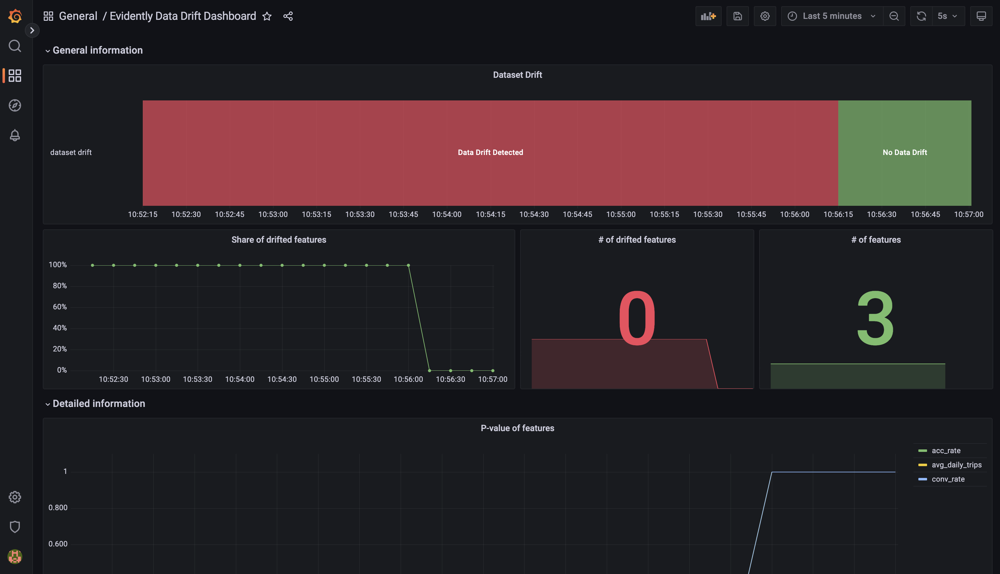
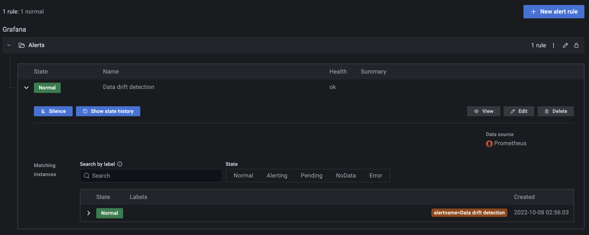

Trong bài trước, chúng ta đã thiết kế monitoring service với các công việc:
Tạo ra dataset chứa feature bị drift
Triển khai monitoring service để theo dõi data và model performance
Thiết lập Grafana dashboards để hiển thị metrics về data và model
Trong bài này, chúng ta sẽ thực hiện code để triển khai service này.
Môi trường phát triển
Các bạn làm các bước sau để cài đặt môi trường phát triển:
Cài đặt môi trường Python 3.9 mới với các thư viện cần thiết trong file monitoring_service/dev_requirements.txt
Đặt environment variable MONITORING_SERVICE_DIR ở terminal bạn dùng bằng đường dẫn tuyệt đối tới folder monitoring_service. Env var này hỗ trợ chạy python code ở folder monitoring_service/src trong quá trình phát triển.
cd mlops-crash-course-code/monitoring_service
exportMONITORING_SERVICE_DIR=$(pwd)
Các tools sẽ được sử dụng trong bài này bao gồm:
Feast: truy xuất Feature Store
Flask: viết API cho monitoring service
Evidently: kiểm tra chất lượng data và model performance
Note
Trong quá trình chạy code cho tất cả các phần dưới đây, giả sử rằng folder gốc nơi chúng ta làm việc là folder monitoring_service.
Monitoring service
Trong phần này, chúng ta sẽ thực hiện code monitoring service. Hình dưới đây thể hiện các luồng data của monitoring service.
Quá trình phát triển monitoring service gồm các bước chính sau.
Viết code gửi request và response data từ Online serving API sang Monitoring API (một RESTful API) của monitoring service
Viết Monitoring API ở monitoring service, nhận data từ Online serving API, dùng data này để theo dõi data drift và model performance
Thiết lập Prometheus server và Grafana dashboards để hiển thị các metrics về data drift và model performance
Monitoring API
Đầu tiên, chúng ta sẽ viết Monitoring API ở monitoring service. Code của monitoring service được đặt tại monitoring_service/src/monitoring_service.py. Bạn hãy để ý tới hàm iterate của class MonitoringService với luồng xử lý data như sau.
def_process_curr_data(self,new_rows:pd.DataFrame):# (1)label_data=read_label_data()# (2)iflabel_dataisNone:returnFalsemerged_data=merge_request_with_label(new_rows,label_data)# (3)ifnotself.current_dataisNone:# (4)curr_data:pd.DataFrame=pd.concat([self.current_data,merged_data],ignore_index=True)else:curr_data=merged_datacurr_size=curr_data.shape[0]ifcurr_size>self.WINDOW_SIZE:# (5)curr_data.drop(index=list(range(0,curr_size-self.WINDOW_SIZE)),inplace=True)curr_data.reset_index(drop=True,inplace=True)self.current_data=curr_data# (6)ifcurr_size<self.WINDOW_SIZE:# (7)Log().log.info(f"Not enough data for measurement: {curr_size}/{self.WINDOW_SIZE} rows. Waiting for more data")returnFalsereturnTrue
Hàm _process_curr_data nhận vào data mới được gửi từ Online serving API sang
Đọc label data hay chính là request_data
Kết hợp data mới với label data theo request_id
Tích luỹ data mới với data hiện tại
Bỏ bớt records nếu như số records vượt quá WINDOW_SIZE chính là kích thước của test window
Lưu data mới đã được xử lý vào làm data hiện tại
Kiểm tra xem đã đủ số records cần thiết chưa
Question
Tại sao cần đọc label data hay request_data mỗi khi có records mới được gửi đến từ Online serving API?
Chúng ta không cần phải đọc lại request_data mỗi khi có records mới vì request_data là không đổi. Sở dĩ code được viết như vậy là để giả sử rằng không phải lúc nào label cũng có sẵn ở production.
Sau khi kết hợp data mới với label data theo request_id data được tổng hợp chứa các cột sau:
Các cột features: dùng để theo dõi data drift
Cột prediction và cột label trip_completed: dùng để theo dõi model performance. Lưu ý, cột prediction được biến đổi trong hàm merge_request_with_label để luôn có giá trị là 1
Tiếp đến, hãy xem hàm _process_next_run và _execute_monitoring.
Tạo tên metric, phải giống với metric được dùng trong Prometheus query trên Grafana dashboards
labels là một dict với key, value là tên và giá trị của các label được quy ước bởi Evidently, ví dụ {'dataset': 'reference', 'metric': 'accuracy'}. labels này có ý nghĩa tương đương với Prometheus labels
self.metrics lưu các object Gauge của Prometheus. Gauge gửi metrics tới Prometheus server. Biến found là một object Gauge, tương ứng với mỗi metric lấy ra từ Evidently
Gán Prometheus labels và giá trị cho Gauge object. Gauge object sẽ gửi labels, giá trị của các metrics lên Prometheus server
Ngoài các đoạn code quan trọng nhất của monitoring service ở trên, các đoạn code còn lại khác mà bạn cần lưu ý như dưới đây.
Tạo Flask app. Flask là một thư viện phổ biến được dùng để viết RESTful API trong Python
Tự động tạo endpoint /metrics để Prometheus thu thập metrics
Khởi tạo MonitoringService class
Tạo endpoint /iterate để Online serving API gửi data tới
Biến đổi data nhận vào thành DataFrame
Gọi hàm iterate để thực hiện đánh giá data drift và model performance
Chạy Flask app tại port 8309 ở máy local
Để Prometheus thu thập được metrics gửi qua endpoint /metrics, bạn cần tạo 1 Prometheus Job trong file config của Prometheus server được đặt tại prom-graf/prometheus/config/prometheus.yml trong repo mlops-crash-course-platform. Prometheus Job này đã được tạo sẵn như dưới đây.
Sau khi code xong monitoring service, chúng ta sẽ cập nhật code trong Online serving API để gửi data tới Monitoring API sau khi model thực hiện dự đoán.
Tích hợp Online serving
Bạn mở file code của Online serving API tại model_serving/src/bentoml_service.py trong repo mlops-crash-course-code. Hãy chú ý tới đoạn code trong hàm inference.
Lấy ra index của tài xế có khả năng cao nhất sẽ hoàn thành cuốc xe
Lấy ra ID của tài xế được chọn
Lấy ra record trong DataFrame gốc của tài xế được chọn
Thêm cột request_id vào monitor_df với giá trị là request_id được gửi tới trong request
Thêm cột best_driver_id vào monitor_df. Việc lưu trữ lại thông tin về dự đoán của model là cần thiết, giúp cho việc theo dõi data và debug ở production dễ dàng hơn
Gọi tới hàm monitor_request để gửi data tới Monitoring API. Data được gửi bao gồm các cột chính: request_id, các cột features, prediction và best_driver_id
Biến đổi DataFrame thành dạng JSON với sự hỗ trợ của NumpyEncoder class, giúp cho việc biến đổi JSON trở lại thành DataFrame ở phía Monitoring API dễ dàng hơn
Gửi POST request tới Monitoring API
Như vậy là chúng ta vừa tích hợp Online serving API với Monitoring API của Monitoring service. Sau khi model thực hiện dự đoán ở Online serving API, data được tổng hợp từ requests và prediction của model sẽ được gửi sang Monitoring API để được theo dõi và đánh giá. Monitoring API sẽ thực hiện việc đánh giá data drift, model performance, rồi gửi các metrics sau khi đánh giá ra API endpoint /metrics. Prometheus server sẽ định kì thu thập các metrics qua endpoint /metrics này. Grafana sẽ đọc các metrics từ Prometheus server và hiển thị lên dashboards. Trong phần tiếp theo, chúng ta sẽ thiết lập Grafana dashboards để hiển thị các metrics.
Grafana dashboards và Alerts
Có 2 dashboards chúng ta cần thiết lập, bao gồm:
monitoring_service/dashboards/data_drift.json: Dashboard cho metrics về data drift
monitoring_service/dashboards/classification_performance.json: Dashboard cho metrics về model performance
Bạn cần làm các bước sau để triển khai các dashboards này lên Grafana.
Copy 2 file dashboards trên vào mlops-crash-course-platform/prom-graf/run_env/grafana/dashboards
Dashboard này chứa các panels về model performance bao gồm:
Reference dataset data
Quality: Tổng hợp model performance metrics theo thời gian
accuracy, f1, precision, recall: Model performance metrics
Prediction class representation: Số lượng các dự đoán theo class
Target class representation: Số lượng các label theo class
Class 0 information: Thông tin về class 0
Confusion 0: Confusion matrix cho class 0
Confusion in time: Giá trị của confusion matrix theo thời gian
Quality: Tổng hợp model performance metrics cho class 0 theo thời gian
Class 1 information: Tương tự class 0
Alerts
Grafana Alerts cho phép kích hoạt cảnh báo khi một vấn đề về metrics xảy ra. Trong bài này, chúng ta sẽ tạo một cảnh báo đơn giản để cảnh báo khi dataset bị drift.
Ở sidebar bên phải của Grafana, click Dashabords. Ở trang Dashboard, tạo Folder tên là Alerts. Folder này được dùng để lưu cảnh báo chúng ta sẽ tạo
Trong trang tạo cảnh báo, tạo cảnh báo mới tên là Data drift detection, điền các thông tin trong phần 1. Set a query and alert condition như ảnh dưới, với query A là:
Phần 2. Alert evaluation behavior và 3. Add details for your alert
Click Save and exit
Info
Để cấu hình cách mà Alert được gửi đi, bạn vào tab Notification polices và thêm policy mới. Trong bài này, để đơn giản hơn chúng ta sẽ giữ nguyên policy mặc định của Grafana.
Thử nghiệm
Data bị drift
Sau khi thiết lập xong dashboards, chúng ta sẽ viết code để gửi request giả tới Online serving API. Code để gửi requests được đặt tại monitoring_service/src/mock_request.py.
Tiếp theo, chúng ta sẽ test trường hợp data không bị drift. Bạn làm các bước sau.
Gửi 5 requests giả chứa normal_data tới Online serving API
python src/mock_request.py -d normal -n 5
Kiểm tra Evidently Data Drift Dashboard, bạn sẽ thấy thông tin Dataset không bị drift số features bị drift là 0. Ngoài ra, cảnh báo Data drift detection cũng đã ở trạng thái Normal
Evidently Data Drift Dashboard - Dataset không drift
Alert Data drift detection ở trạng thái Normal
Tip
Nếu mở Kibana ra, bạn cũng sẽ thấy logs của Monitoring service được tự động thu thập nhờ chức năng tự động thu thập logs từ các containers của Filebeat
Tổng kết
Theo dõi và bảo trì luôn là một phần quan trọng trong quá trình phát triển một hệ thống phần mềm nói chung, đặc biệt là trong một hệ thống ML nói riêng. Trong bài Monitoring này, chúng ta đã biết về các metrics điển hình của hệ thống về data và về model mà một hệ thống ML thường theo dõi.
Chúng ta cũng đã phân tích và thiết kế một service khá phức tạp là Monitoring service. Bạn đã biết cách theo dõi các metrics của data, model như Phát hiện Data drift, Theo dõi model performance, triển khai và thiết lập cảnh báo trên Grafana. Trong thực tế, bạn có thể sẽ cần dùng Grafana alert để kích hoạt một tác vụ nào đó, ví dụ như kích hoạt training pipeline tự động khi phát hiện dataset bị drift hay đơn giản là gửi email thông báo về model performance tới Data Scientist, v.v.
Trong bài tiếp theo, chúng ta sẽ thiết lập và triển khai CI/CD cho các phần trong hệ thống ML. CI/CD giúp chúng ta tự động test và tự động triển khai các Airflow DAGs, cũng như là các services như Online serving service hay Monitoring service, thay vì gõ các lệnh thủ công trong terminal.

{kind=link}
{kind=link}

{kind=link}
{kind=link}
{kind=link}
{kind=link}
{kind=link}
{kind=link}
{kind=link}
{kind=link}
{kind=link}